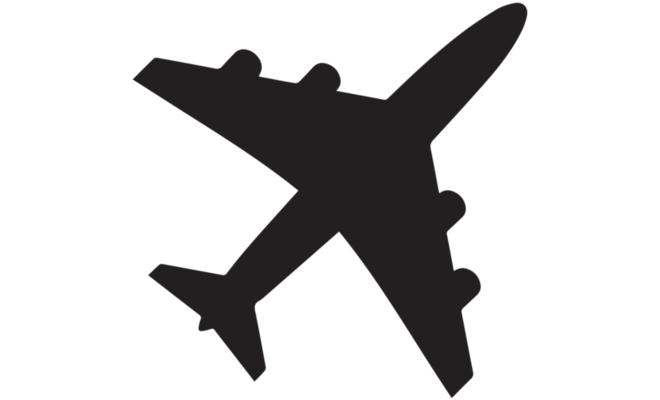

Úvod
Jmenuji se Erik Lukášek. Je mi 16 let. Narodil jsem se 15.3.2008. ve Fakultní nemocnici v Hradci Králové kde moje máma žila před tím než se poznala s mým tátou. V blízkosti hradce má táta svoje rodiče tak tam stále jezdíme.
Celý život bydlím v Mladé Boleslavi v paneláku v ulici Jana Palacha, v Mladé Boleslavi se mi líbí, není moc velká ale je tu vše co potřebuji k spokojenému životu.
Na základní školu jsem chodil na sedmou základní školu v Mladé Boleslavi
Na základní škole jsem byl od roku 2014 do roku 2023 kde jsem si za tu dobu našel spoustu kamarádu a prožil spousta zážitků třeba jsem jeli se školou v osmé třídě na školní výlet do španělska.
Minulý rok jsem ji úspěšně ukončil a dostal jsem se na Střední průmslovou školu na obor IT který jsem si vybral kvůli tomu že jsem se chtěl naučit něco o počítačích.
Nejvíce mě na škole baví odborné předměty jako elektrotechnika tvorba webových stránek nebo hardware. Jsem rád že jsem si tuto školu vybral a doufám že i přes problémy s matematikou ji
úspěšně dokončím
Moje záliby jsou hraní počítačových her, Taekwondo a airsoft.
Počítačové hry hraju už od svého útlého věku a mojí první hrou bylo citie skylines kterou mi koupil táta a je o stavění města, hra mě uchvátila na tolik že ji i po několika letech stále hraju a nepřestává mě bavit.
Moje současně nejoblíbenější hry jsou s vojenskou tématikou a zejména hra od českého studia bohemia interactive Arma3 kterou jsme si pořídili s kamarády a nesmírně mě baví díky její modifikovatelnosti, a komunitě
která se skládá spíše ze starších lidí které taky baví vojenská tématika a tak máme společné téma k diskuzi.
Taekwonod jsem začal dělat v osmé třídě protože mě pozval kamarád na zkoušku na trénink a od té doby jsem tam zůstal a trávím tam tři hodiny týdně už třetím rokem
taekwondo byl první sport co mě skutečně začal bavit a díky jeho různým disciplínám se musí člověk připravovat na různé věci od posilování po výskoky do vzduchu a to mě baví.
Airsoft jsem začal dělat před dvěmi lety na podzim když jsem si šel vyzkoušet zahrát na zdejší airsoft hřiště na betonárce kde mě airsoft uchvátil a tak jsem si pořídil i svou první zbraň a s kamarády vyrazil na první akce kde jsem strávil hodiny
zábavy s kamarády v lese nebo v rozpadlé budově s kuličkovkou v rukou
Bohužel je airosft časově i finančně z mých koníčků nejnáročnější protože výbava akce a kuličky nejsou levné a najít akci v naši blízkosti o víkendu kdy všichi kamarádi můžou jet je bolest
Na dalších stránkách se dozvíte něco o mé rodině, a zájmech

Škola
Na základní školu jsem chodil na sedmou základní školu v Mladé Boleslavi Na základní škole jsem byl od roku 2014 do roku 2023 kde jsem si za tu dobu našel spoustu kamarádu a prožil spousta zážitků třeba jsem jeli se školou v osmé třídě na školní výlet do španělska. Minulý rok jsem ji úspěšně ukončil a dostal jsem se na Střední průmslovou školu na obor IT který jsem si vybral kvůli tomu že jsem se chtěl naučit něco o počítačích. Nejvíce mě na škole baví odborné předměty jako elektrotechnika tvorba webových stránek nebo hardware. Jsem rád že jsem si tuto školu vybral a doufám že i přes problémy s matematikou ji úspěšně dokončím
Ukrajina
Máma je původem ukrajinka, a tak jsme před válkou každý rok jezdili za máminými prarodiči na ukrajinu
Na ukrajině jmem většinou zůstávali ve vesnici u babičky a jezdili k tetě a sestřenici do města Tysmenica a Ivano-Frankivsk.
Dvrakrát jsme jeli na výlet do Zakarpatí. Poprvé dostal manžel tety dřevěnou Vilu na výkend tak jsme se tam jeli podívat. Zakarpatí a celá Ukrajina má nádhernou přírodu.
Výlet si moc nepamatuji protože jsem byl jěště malý ale z fotek to vypadalo úžasně.
Když jsme tam jeli podruhé tak jsme si tam pronajali chatu. Poté jsme jeli na výlet po okolí, navštívily jsme místní aquapark a přírodní rezervaci.
Rezervací jsme na Ukrajině navštívily více ale nikde to nebylo tak pěkné jako v Zakarpatí.
Od začátku války jsem na Ukrajině nebyl ale doufám že válka skončí co nejdříve i když to tak nevypadá, dění každý den sleduji a
obávám se že obě strany dokážý bojovat jěště několik let.Válka se dostala do brutální poziční opotřebovávací fáze a konec je v nedohlednu.
Zatím nikdo z mé rodiny kromě manžela tety nebyl mobilizován a doufám že to tak zůstane. Manžel tety kterému říkám Vujko byl na začátku války
povolán protože poblíž města kde bydlí byla poprvé v boji rusi použita hypersonická raketa a trefila ukrajinský muniční sklad.Vujko který na vojně sloužil jako ženista tak měl asi tento sklad jít opravit ale neprošel zdravotní kontrolou
a tak mobilizovaný nebyl. Ale mám bohužel několik kamarádu kteří mobilizováni byli.

cestování
S rodiči každý rok létáme na dovolenou k moři. Už jsme byli v čtyřikrát v Řecku, v Turecku, na Kypru a v Tunisu. Moje první dovolená byla v mojí první třídě a letěli jsme na řecký ostrov Kos. Dovolenou si moc nepamatuji ale užil jsem si ji ale moc si ji nepamatuji. Jedinou věc kterou si pamatuji je že jsem v moři viděl mořského hada když jsem se potápěl, od té doby se asi trochu bojím hluboké vody. Moje druhá dovolená byla do opět do řecka tentokrát na pevninu k hoře Olymp. Byly jsme většinu v hotelu ale také jsme jeden den vyrazili na výlet na horu Olymp, půjčili jsme si auto a jeli. Cestou jsme se stavily v klášteře a šli na procházku cestou jsme přecházeli potůček a rodiče napadlo že se na kamenech v rybníčku vyfotíme. Při focení jsem ale z kamene spadl a spadl jsem to potoka, naštěstí jsem si nic nudělal a pod vodou jsem nestrávil ani deset sekund. Byl jsem z toho tak udivený že jsme raději jely zpátky na hotel. Třetí dovolená byla do Turecka která se mi líbíla trochu více ale protože jsem byl ještě malá tak jsme zůstaly převážně v hotelu Čtvrtá dovolená byla na Kypru, Kypr byl velmi zajmavý zážitek. Byly jsme na jeho severní půlce která je od padesátých let okupovaná tureckem. Pátá dovolená byla na Krétu. Na Krétě jsme jeli na výlet na nejzápadnější pláž Kréty kde byla ale studená voda a tak jsme si to moc neužily. Šestá dovolená byla do Tunisu. To byla asi moje nejoblíbenější dovolená. Byli jsme na ostrově Djerba. Jeden den jsme jeli na výlet na Saharu autobusem cestou jsme se stavily na spostě zajmavých místech jako na vyhlídce ve vesnici nebo v Berberském bydlení ve Skále. Na Sahaře jsme si dokonce zajezdili na velbloudech. Tunisko bylo zajmvé. Bylo zajmavé vidět jak se žije v arabském světě. Poslední sedmou dovolenou jsme byly na řeckém ostrově Rhodos. Při příjezdu jsme v dáli v moři mohly vidět požáry lesů v Turecku. V osmé třídě základní školy jsme taky jeli na výlet do Španělska. Jeli jsme dvoupatrovýám autobusem dvatisíce kilometrů skoro jeden celý den. To byl zážitek sám o sobě i přes to že jsem díky cestám na ukrajinu zvyklí na dlouhé trasy tak todle bylo snad jěště horší. Bydleli jsme v Ubytovně v druhé ulici od pláže. Zajeli jsme taky do místního aquaparku kde jsem měl možnost si vyskoušet údajně jeden z nejstrmějších topogánů. Také jsme jeli do města Valencie pokoukat se do oceánografického muzea. Španělsko jsem si užil ale jako destinace mi přijde strašně nudné.